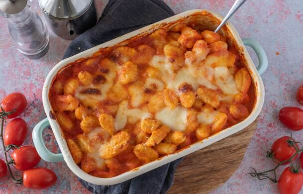

Gli Gnocchi alla Sorrentina
Vuoi imparare a cucinare questa ricetta tipica della cucina campana?
Un po' di storia prima di cominciare
- Ha origine nell'area di Sorrento, da qui il momento
- In Campania gli gnocchi venivano detti strangulaprievete, termine derivante dal greco che dovrebbe indicare un oggetto tondo
- Secondo la leggenda, gli gnocchi nascono nel 1600 grazie ad un cuoco curioso di sperimentare con le patate. Dopo un’attenta
analisi decise di lessarle, schiacciarle e farne un impasto aggiungendo un pizzico di farina ed acqua.
il composto però, doveva essere tagliato in tocchetti tondeggianti, onde evitare che il tutto si sfaldasse.
E ora, COMINCIAMO
Ingredienti
Ingredienti per gli Gnocchi
- 300 gr di Farina 00
- 1 uovo
- 1 kg di patate
- sale
Ingredienti per il condimento
- 500 gr di Passata di Pomodoro
- 200 gr di Mozzarella
- 40 gr di Parmigiano grattugiato
- Olio extravergine di oliva
- Cipolla
- Sale
Procedimento
- Sciacqua per bene le patate e poi cuocile al vapore , finché non risulteranno molto morbide.
- Scola le patate ed elimina la buccia aiutandoti con un coltello. Fai la classica fontana con la farina.
- Unisci al centro le patate, schiacciandole con lo schiacciapatate
- Rompi l'uovo al centro ed aggiungi un pizzico di sale
- Inizia a mescolare con una forchetta, incorporando man mano la farina e le patate
- Lavora il tutto con le mani, fino ad avere un composto morbido e compatto
- Al termine, dovrai ottenere una palla liscia e omogenea. Dividi l'impasto in quattro porzioni
- Forma tanti filoncini spessi 2 cm e tagliali a tocchetti. passali sui rebbi della forchetta per la tipica forma
- Trita finemente la cipolla e raccoglila in un pentolino con un filo d'olio
- Metti sul fuoco e lascia appassire dolcemente
- A questo punto, versa la passata di pomodoro e mescola. Aggiungi un pizzico di sale e lascia cuocere 20 minuti
- Lessa gli gnocchi in acqua bollente e salata, appena saliranno a galla, scolali
- Trasferisci gli gnocchi in una pirofila, velata con uno strato di sugo
- Aggiungi la mozzarella a dadini, e prosegui a realizzare strati con gnocchi, sugo e mozzarella
- Completa con il Parmigiano grattugiato e inforna a 200 °C per 10 minuti con il grill acceso
I vostri gnocchi sono pronti! sfornateli e serviteli ben caldi
Torna alle ricette